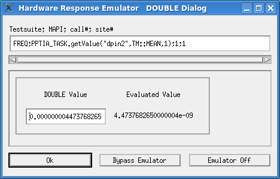

DOUBLE type
The Hardware Response Emulator DOUBLE Dialog window opens when one of the following APIs is executed offline using the emulator in "Store" mode:
ANALOG(set).TIA(pin, core).getMean(pin1[,pin2]);ANALOG(set).TIA(pin, core).getMin(pin1[,pin2]);ANALOG(set).TIA(pin, core).getMax(pin1[,pin2]);ANALOG(set).TIA(pin, core).getJitter(pin1[,pin2]);getValue(pin1[,pin2],resultType[, measIndex]);
The window also opens when ANALOG(set) is replaced with
Analog in any of the API calls.

If you specify user-provided data for TIA, enter a value in the DOUBLE Value text box to be used as a result value of the API displayed in the Testsuite; MAPI; call#; site# field. Then click OK.
Testsuite; MAPI; call#; site# |
This field displays the test suite name and test method API that takes the hardware response Data specified in this dialog. The expression in this field is similar to the one in the ARRAY_X type. |
DOUBLE Value |
This field contains a value to be used as the result value of the API specified in the Testsuite; MAPI; call#; site# field. The specified number is converted to DOUBLE with 16 digits, and displayed below the Evaluated Value label. |
OK |
Same as for ARRAY_X type. |
Bypass Emulator |
|
Cancel Emulator |
Functional changes
- Introduced before SmarTest 6.3.2